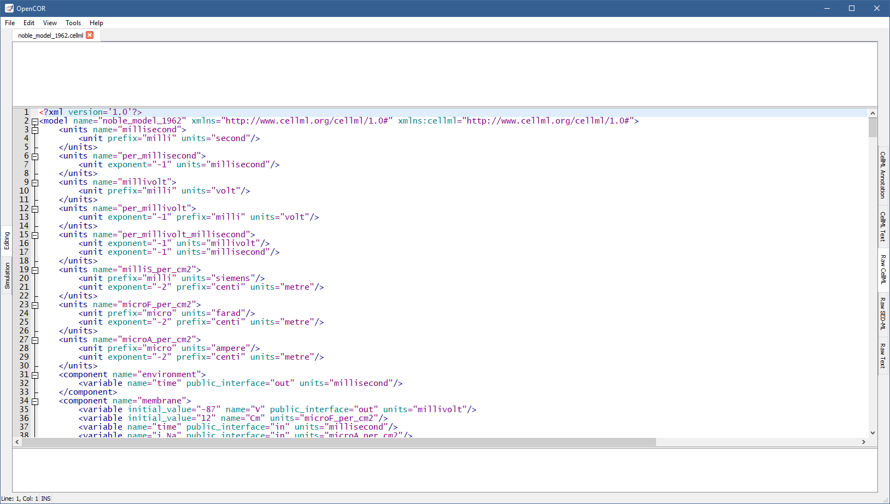
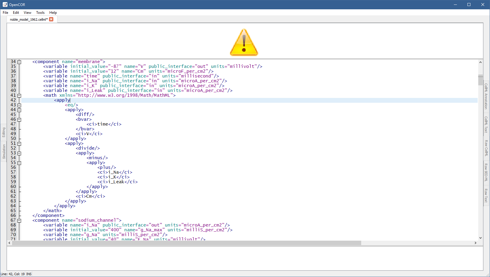
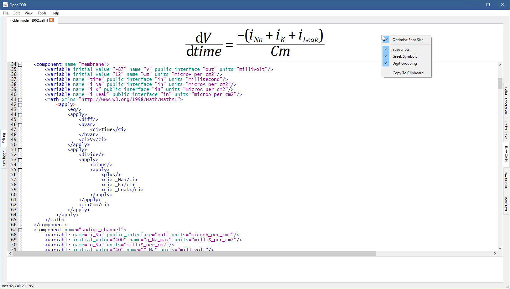
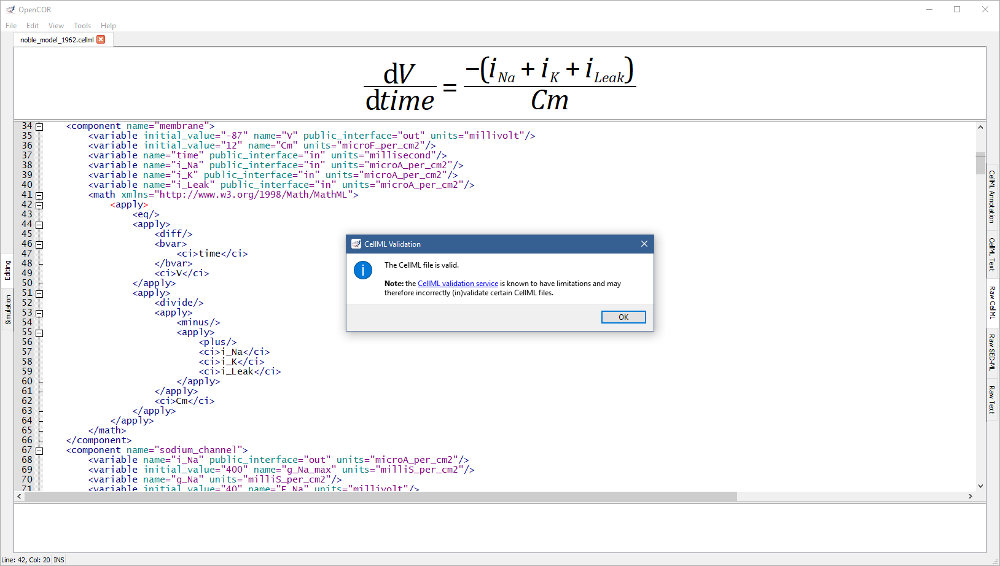
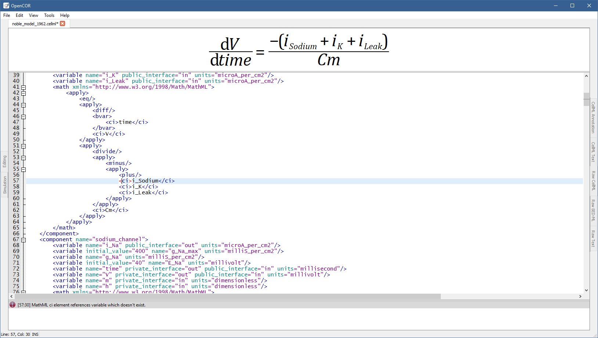

The RawCellMLView plugin can be used to edit CellML files in their raw format using a text editor. If you open a CellML file, it will look something like:
Apart from using syntax highlighting, the view has the same features as the Raw Text view.
The panel above the text editor is used to visualise mathematical equations in real-time.
You just need the caret to be within a valid apply MathML block:
If the equation is not valid, a warning sign gets displayed:
The equation viewer can be customised using its context menu:
The font size can thus be optimised, so that an equation can take as much space as possible when rendered.
Subscripts are also supported (e.g. a_b will be rendered as ab; note, however, that this feature has an inherent limitation, e.g. a__b, _a_b and a_b_ will also be rendered as ab), as are Greek symbols (i.e. alpha, beta, etc. are replaced with α, β, etc.) and digit grouping (e.g. 1000 will be rendered as 1,000).
A rendered equation can also be copied to the clipboard for use in another program.
The panel below the text editor is used to list any CellML issue that results from trying to validate a CellML file, which can be done either by pressing Ctrl+Shift+T or through the Tools | CellML Validation menu or the context menu of the text editor:
If the CellML file is valid, then a message box confirming its validity is displayed:
Otherwise, the bottom panel lists all the issues with the CellML file:
To double click on an issue will get the text editor to navigate to the corresponding line.
It may happen, while editing a model, that the contents of the text editor is not properly formatted anymore.
In this case, you can reformat it by pressing Ctrl+Shift+R or through the Tools | Reformat menu or even the context menu of the text editor.